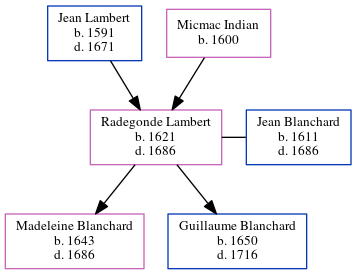

Radegonde Blanchard (née Lambert) 1621 - 1686
[ Home ] | [ Calendar ] | [ Surnames Index ] | [ Family History ]The child of Jean Lambert and Micmac Indian Radegonde Lambert, the 10 times great-grandmother of Michele Copp (née Phillips), was born in Loudun, Vienne, Poitou-Charentes, France in 16211 and married Jean Blanchard (with whom she had 2 children: Madeleine and Guillaume) in Port Royal, , Nova Scotia, Canada in 1642.
She died in 1686 in Amherst, Nova Scotia.
Parents
- Jean was born in 1591
- Micmac was born in 1600
Children
- Madeleine was born in 1643
- Guillaume was born in 1650
Citations
- U.S. and International Marriage Records, 1560-1900 Online publication - Provo, UT, USA: The Generations Network, Inc., 2004.Original data - This unique collection of records was extracted from a variety of sources including family group sheets and electronic databases. Originally, the information was deriv
Family Tree
Generated by ged2site. Last updated on Jun 16, 2024